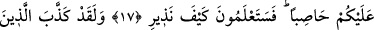

YERYÜZÜNÜ SİZE
BOYUN EĞDİREN O’DUR
15. Yeryüzünü size boyun eğdiren O’dur. Şu hâlde yerin omuzlarında (üzerinde)
dolaşın ve Allah’ın rızkından yeyin. Dönüş ancak O’nadır.
16. Gökte olanın, sizi yere batırıvermeyeceğinden emin misiniz? O zaman yer
sarsıldıkça sarsılır.
17. Yahut gökte olanın üzerinize taş yağdıran (bir fırtına) göndermeyeceğinden
emin misiniz? İşte (bu) tehdidimin ne demek olduğunu yakında bileceksiniz!
18. Andolsun ki, onlardan öncekiler de (bunu) yalan saymışlardı; ama benim
karşılık olarak verdiğim azap nasıl olmuştu!
“Yeryüzünü” sizin menfaatleriniz için “size boyun eğdiren O’dur.” Âlimler
yeryüzünün boyut ve mikdarı hakkında ihtilaf etmişlerdir. Mekhul’den rivâyet
olunduğuna göre dünyanın en uzak noktasıyla en yakın noktası arasındaki mesâfe beşyüz
senelik yürüyüş mesâfesidir. İkiyüz yıllık mesâfe denizden ikiyüz yıllık mesâfe de
kimsenin oturmadığı meskun olmayan mahallerin mesâfesidir. Seksen yıllık mesâfe
Ye’cûc ve Me’cûc, yirmi yıllık bir mesâfe ise diğer yaratıkların yaşadıkları yerlere
âiddir.
Katâde’den rivâyet olunduğuna göre dünya yüzü okyanusun kuşattığı mesâfe olarak
yirmi dört bin fersah uzunluğundadır. Sudan ülkesi on iki bin fersah, Rum memleketi
sekiz bin fersah, acemlerin ve türklerin memleketi üç bin fersah, arapların ki ise bin
fersahtır.
Abdullah b. Ömer (r.anhümâ)’dan rivâyet olunduğuna göre siyâhilerden hiçbir elbise
giymeyenlerin dörtte biri bütün insanlardan daha fazladır. Batlamyus yeryüzünün çapını
hesap edip çıkarmıştır. O yeryüzünün dıştan dışa çevre uzunluğunu yaklaşık olarak
göstermiştir. Batlamyus’un, yeryüzünün ve uzayın konumlarının ayrıntılı deliller
yardımıyla ispatında kullanılacak temel kurallardan söz ettiği bir kitabı vardır. Ona göre
yer yuvarlağının dış çember uzunluğu yüz bin ve seksen bin istarbos uzunluğundadır. Bu